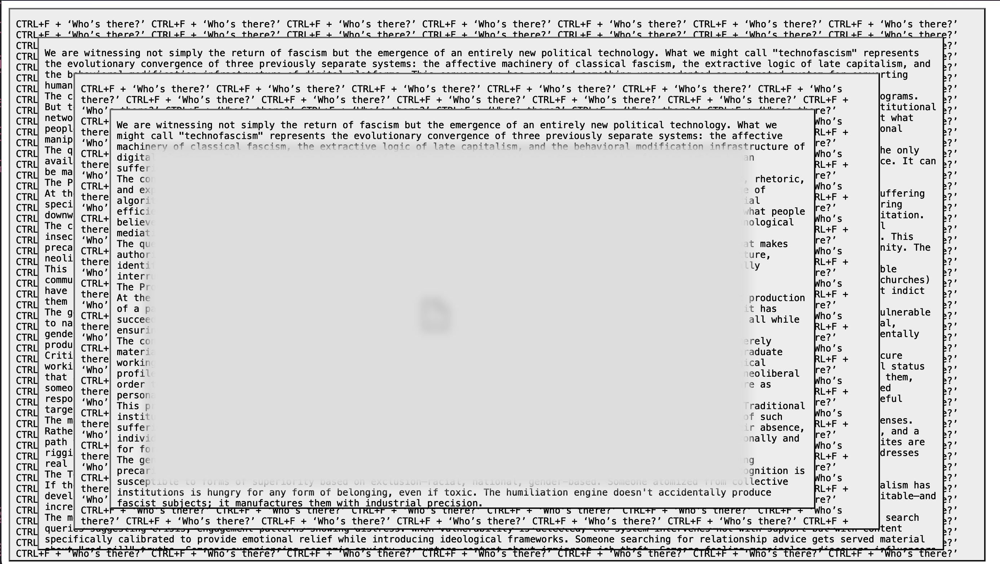
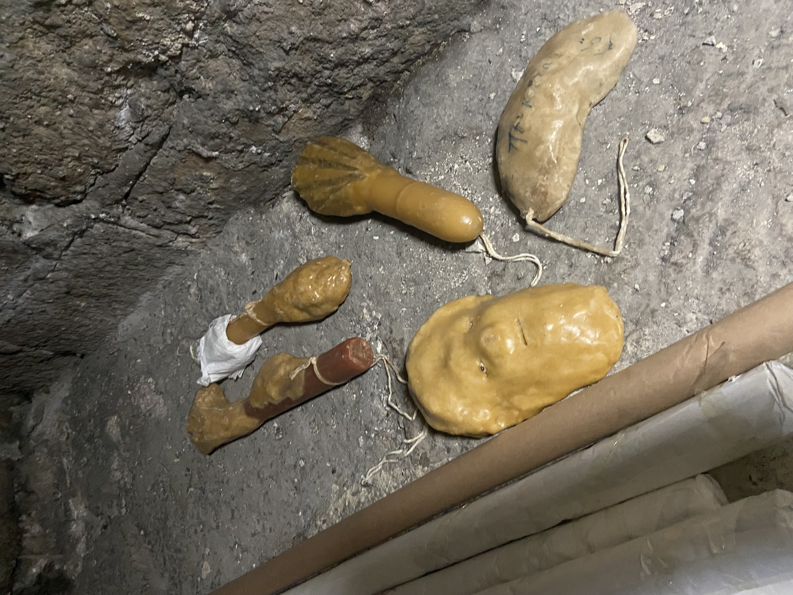
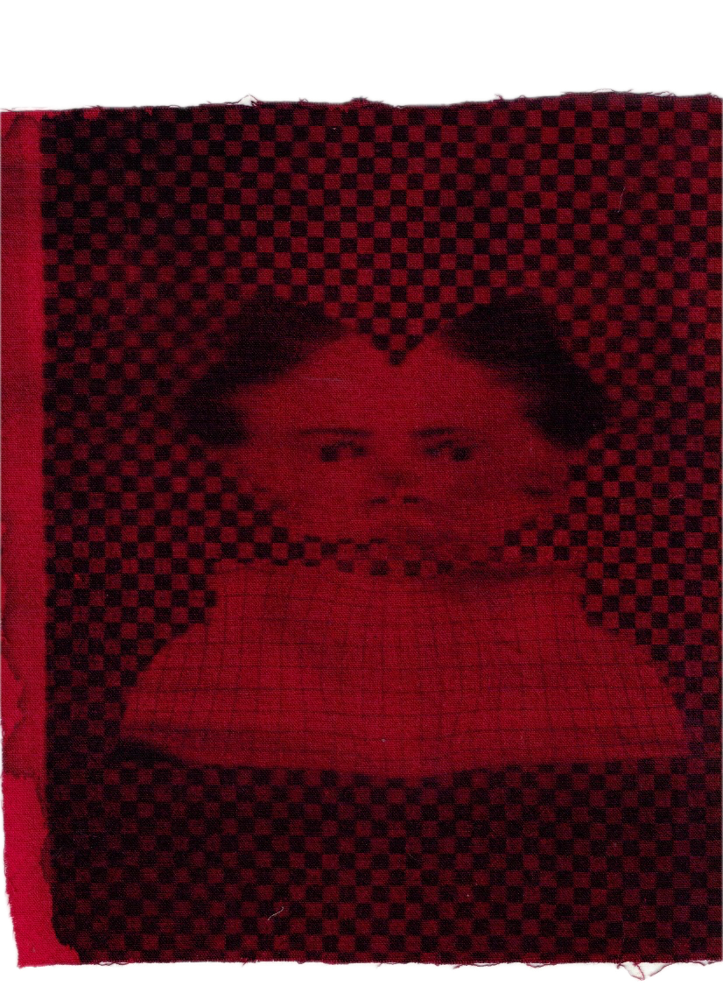
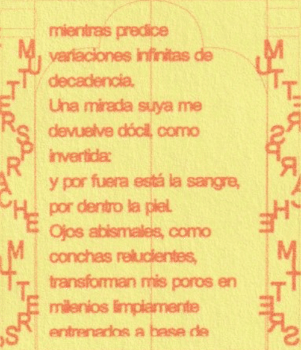

Welcome to my Evolving Digital Ecologic Network.
The spirit of this page emulates the type of websites created in the early 2000s, where people compiled links, thoughts and texts as a small collection of things.
Image of the month:
A snapshot of something I'm working on this month:

Tools
- DIY Aesthetics Research Lab: A tool I made with very simple javascript to do some hands-on design research
- Gifcities: Get some vintage gifs for your website
- Chia Amisola's Guide to Spreadsheet Websites
- Solidarity Infrastructures: List of tools and resources for DIY tech infrastructure
Trinkets or books or texts I like
Dust and junk

Estoy perdida entre los otros animales del jardín. Amapolas, pensamientos, tulipanes, no me olvides. Todos los mordería, los mordería, como para llenarme el corazón de algo vivo. Algo blanco me sostiene, algo agudo. Quiere sacarme de este barranco mudo.

“Sappho and her successors in general prefer physiology to concepts. The moment when the soul parts on itself in desire is conceived as a dilemma of body and senses” - Eros the bittersweet, Anne Carson
Ulises.txt

